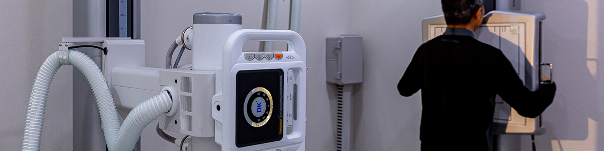

-
검진센터
- 정확한 진단과 근본적인 원인을 치료하는 병원이 되겠습니다.
종합검진

- 프리미엄 종합검진
- 해밀병원 종합건강검진은 몸의 세밀한 부분까지 검사하고 확인하여 문제가 되는 부분을 찾아내고 치료하는 것 까지를 원칙으로 합니다.
종합검진항목
| 검사구분 | 세부항목 |
|---|---|
| 신체계측 | 체성분검사, 혈압, 허리둘레, 신장, 체중 |
| 청력, 시력 | 시력, 안압, 정밀청력검사 |
| 혈액 정밀 검사 | 혈액형, 간·담도 기능, 간염바이러스, 신장기능, 전해질, 고지혈증 및 순환기계, 췌장 및 당뇨, 갑상선 기능, 성병, AIDS, 염증 및 류마티스, 종양 표지자(간암·대장암·전립선암·난소암·폐암·췌장암) |
| 소변 검사 | 비중, PH, 뇨당, 뇨단백, 빌리루빈, 유로빌리 노겐, 게톤, 잠혈, 적혈구, 백혈구 |
| 방사선 검사 | 흉부촬영 |
| 골밀도 검사 | 골다공증, 골연화증 |
| 심전도 | 부정맥, 관상동맥질환 |
| 폐기능 검사 | 폐활량검사 |
| 부인과 검사 | 유방촬영, 자궁경부암검사 |
| 위암 검사 | 위내시경 (수면비 포함) |
| 초음파 검사 | 상복부 초음파 |
| 초음파 검사 | 하복부(전립선, 난소 등) 초음파 |
| 초음파 검사 | 갑상선 초음파 |
| 초음파 검사 | 경동맥 초음파 |
| 초음파 검사 | 유방 초음파 |
| 초음파 검사 | 대동맥류 초음파 |
| 대장암 검사 | 대장내시경 (수면비포함) |
| 암 유전자 검사 |
남성암 6 종 (간암, 폐암, 전립선암, 대장암, 갑상선암, 위암) 여성암 7 종 (유방암, 갑상선암, 자궁경부암, 난소암, 폐암, 대장암, 위암) |